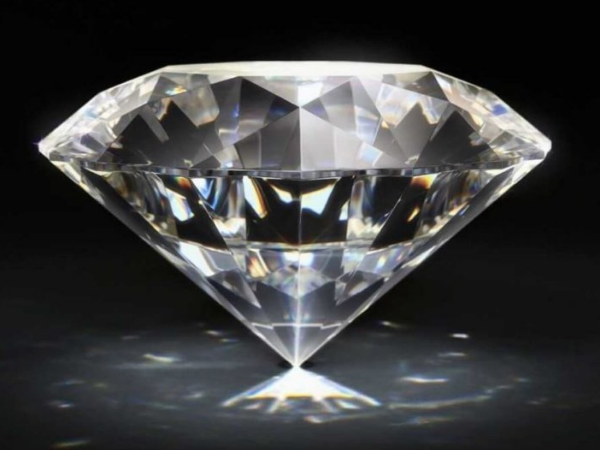
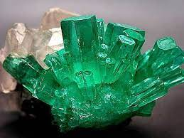
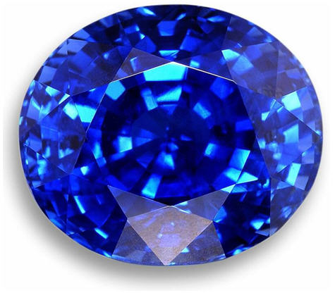

Минералы

Алмаз представляет собой
кубическую модификацию углерода.
В чистом (прозрачном) виде
представлен только данным элементом.

Изумруд — модификация берилла
с примесью Cr3+ или оксидов V и Fe.
Отличается от него зеленой
окраской и прозрачностью.

Сапфир — разновидность корунда,
включающая примеси Fe3+, Fe2+, Ti.
С минералогической точки зрения
сапфиром считают исключительно варианты
синего цвета, с ювелирной
— любых окрасок, кроме красной.
Минералы
- Алмаз
- Изумруд
- Сапфир